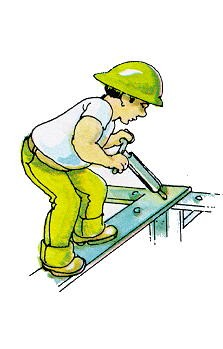

Katra cilvēka ikdienas dzīves un komforta nodrošināšanas viens no svarīgākajiem aspektiem ir kvalitatīvi veikti remonta un celtniecības darbi mājoklī. Mūsu meistaru profesionālais līmenis ir iemesls, kāpēc jau no 2015.gada mēs spējam saglabāt stabilas pozīcijas celtniecības tirgū. Kompānijas BALTIC CENTRS pieredzes aktīvos uzkrājušies jau simtiem kvadrātmetru kvalitatīvi veiktu dzīvokļu remontu, labiekārtotu dzīvesvietu un ofisa telpu. Kompānijas pamatdarbības veids ir telpu apdares un remonta iekšdarbi.
